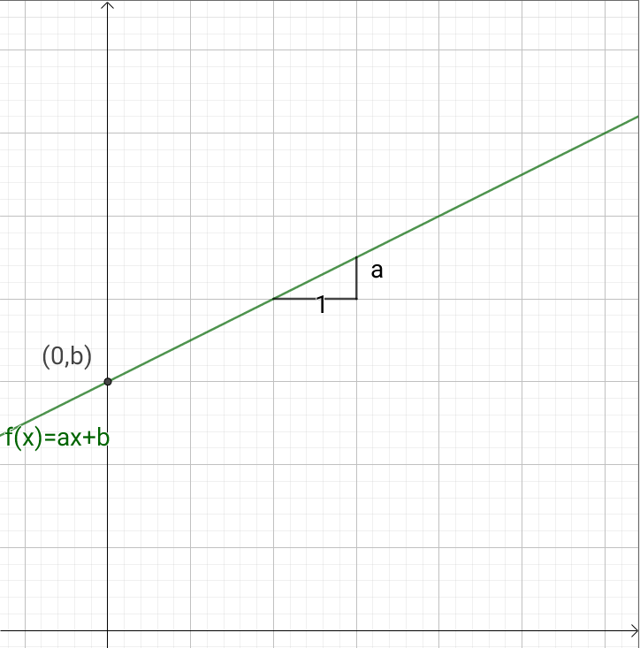
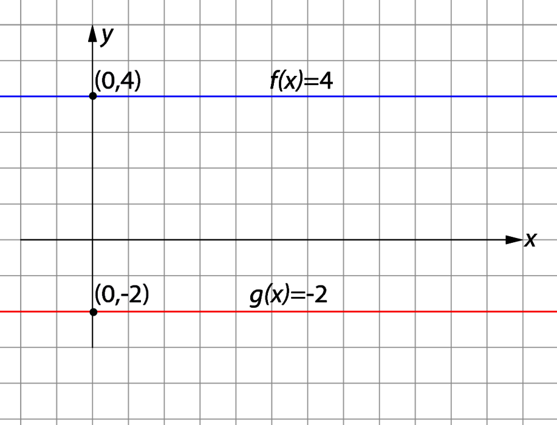
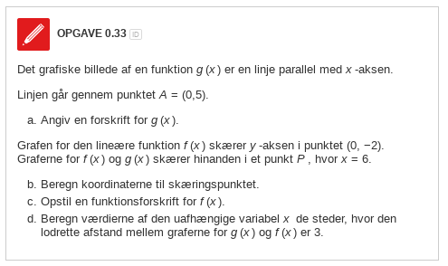
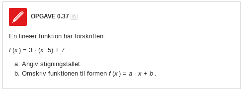
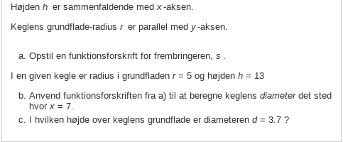
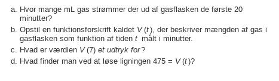

Lineære funktioner
Matematik grundforløb
Vibenshus Gymnasium
(Nye) begreber
(Nye) begreber
- Funktion
- uafhængig variabel
- afhængig variabel
- Forskrift
Funktion
- Beskrivelse af en sammenhæng mellem en afhængig og en uafhængig variabel.
- \(f(x) = a \cdot x + b\)
Uafhængig variabel
- Typisk \(x\)
- "Kan man selv vælge værdien på?"
- Er på den vandrette akse (x-aksen) i et koordinatsystem.
Afhængig variabel
- Før kendt som \(y\)
- Nu kendt som \(f(x)\)
- Eller \(g(x)\)
- Eller \(h(x)\)…
- Hvad siger det inde i hovedet?
Forskrift
- Højre side af \[f(x) = a \cdot x + b\]
- Men hvad med? \[a \cdot x + b = f(x)\]
Grafisk afbildning
- Altså den tegnede graf.
- Ret linje, som skærer y-aksen i \((0,b)\) og med hældningstal \(a\)

Beregninger med funktioner
Beregning af funktionsværdier
\[f(x)=-2 \cdot x + 5\]
- Beregne funktionsværdien \(f(2)\)
- Betyder \(x=2\)
- Indsæt 2 alle steder, hvor der står \(x\)
- \(f(2) = -2 \cdot 2 + 5 = 1\)
Beregning af uafhængig variabel
\[f(x)=-2 \cdot x + 5\]
- Beregn \(x\), når \(f(x)=11\)
- løs ligningen \(11 = -2 \cdot x + 5\)
- \(2x +11 = 5\)
- \(2x = 5 -11\)
- \(x = \frac{5-11}{2}\)
- \(x = -3\)
Den konstante funktion
Den konstante funktion
- \(f(x) = k\)
- eller \(f(x) = b\)
- Hvilken værdi har \(a\) så?

Opgave

Lineær funktion fra ét kendt punkt og et kendt stigningstal
Formel
Det kendte punkt hedder \(P_0 = (x_0,y_0)\), og hældningstallet hedder stadig \(a\).
Funktionen \(f(x)\) findes da vha:
\[f(x) = a\cdot (x-x_0) + y_0\,.\]
- \(a\) skal være et tal, ligesom det altid har skullet.
- \(x_0\) og \(y_0\) skal også være tal.
- \(x\) er den uafhængige variabel, mens \(x_0\) er et tal. (Forvirret?)
Eksempel
\(P_0 = (x_0,y_0) = (2,-3)\) og \(a=-2\)
- \(f(x) = a \cdot (x-x_0) + y_0\)
- \(f(x) = -2 \cdot (x-2) + (-3)\)
- \(f(x) = -2 x + 4 -3\)
- \(f(x) = -2x +1\)
Opgave

Roden i en førstegradsfunktion
AKA skæring med x-aksen
- x-aksen ligger der, hvor \(y=0\).
- Derfor \(f(x)=0\)
- \(f(x) = ax+b\)
- \(ax +b=0\)
- Isolér \(x\)
- \(ax = -b\)
- \(x = - \frac{b}{a}\)
Eksempel
Find roden (skæring med x-aksen) for \[f(x)=3x-15\]
- \(f(x)=0\)
- \(3x-15 = 0\)
- \(x = \frac{15}{3} = 5\)
Opgave


Opgave
